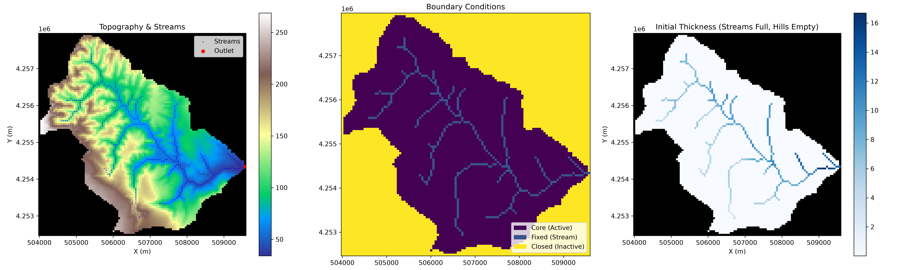
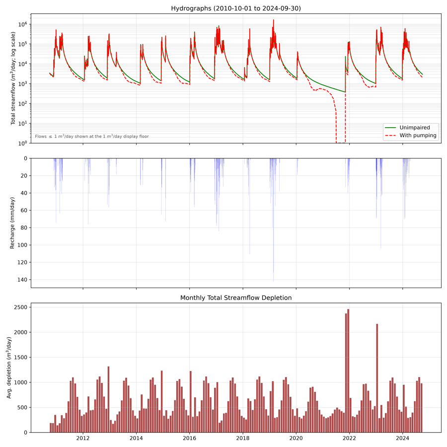
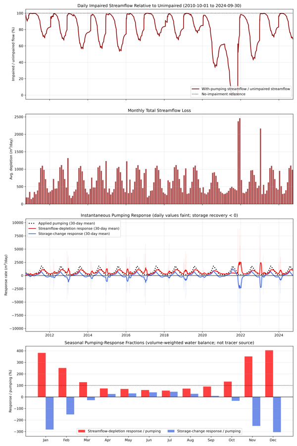
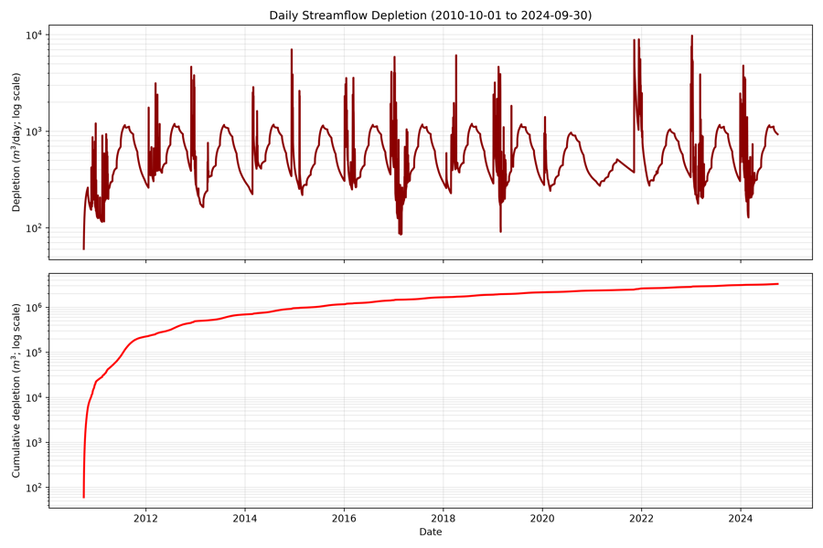
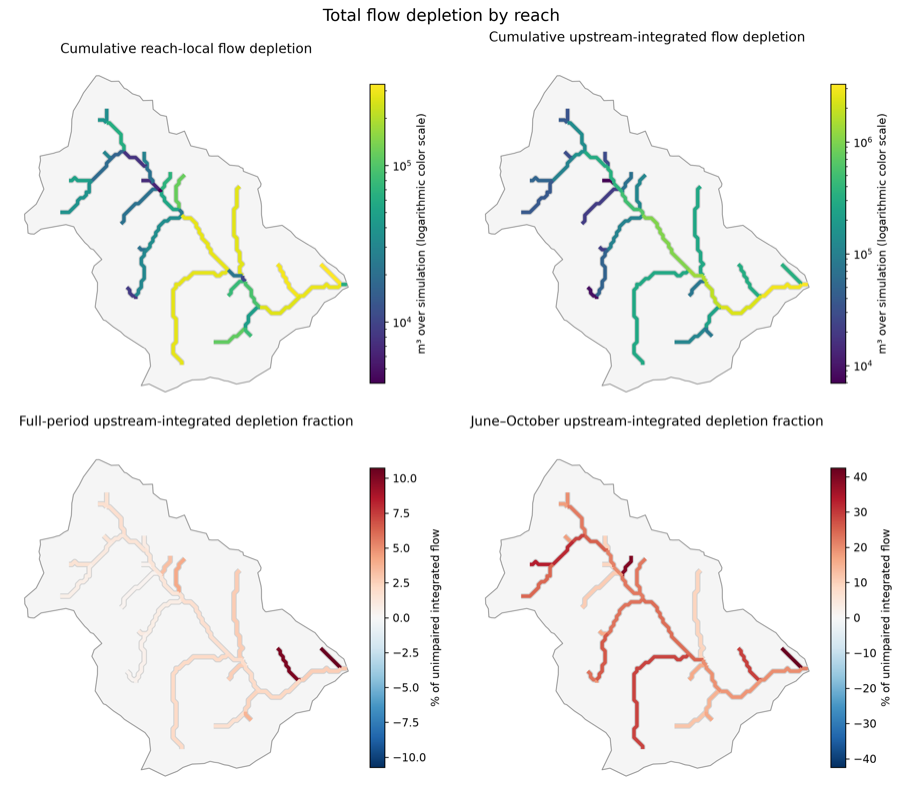
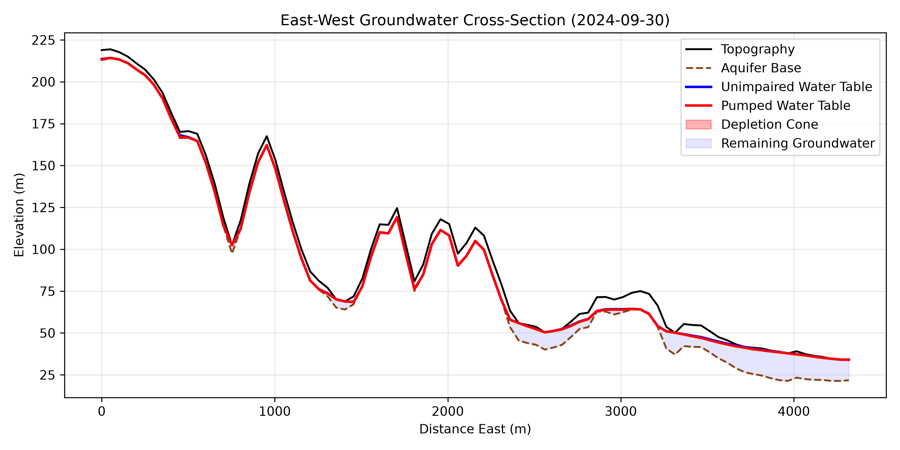
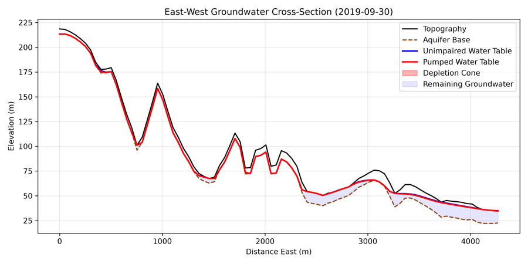

Groundwater–surface-water modeling · Sonoma County, California
Groundwater pumping and modeled streamflow depletion in the Green Valley subwatershed
A spatially distributed Dupuit–Boussinesq screening analysis for water years 2011–2024
Abstract
This study estimates daily groundwater contributions to streamflow and the change in modeled streamflow associated with mapped groundwater pumping in the Green Valley subwatershed. The analysis compares two branches with identical recharge, hydrogeology, initial heads, and numerical settings: an unimpaired branch without extraction and a pumped branch with a repeated monthly pumping schedule. Results are reported at the basin outlet and for individual stream reaches.
The model is intended for screening and method development. It has not been calibrated to observed discharge or groundwater levels, and the magnitude and timing of simulated depletion remain conditional on uncertain hydrogeologic inputs and simplified stream representation.
Study configuration
| Watershed boundary | 15.836 km² | Active recharge area | 14.896 km² |
|---|---|---|---|
| Stream network | 39 reaches; outlet reach 39 | Raster grid | 50 m, UTM zone 10N |
| Main simulation | 5,114 daily steps | Transient spin-up | 2008-10-01 to 2010-09-30 |
| Reach time series | 199,446 reach-days | Stream-loss treatment | Routed-volume limited |
Figures
Model setup and simulated response
Select a figure to open it in the fitted reader. Each figure can also be opened at its original resolution.

Figure S1 Model grid and hydraulic inputs
Figure S2 Basin hydrographs
Figure S3 Paired pumping response
Figure S4 Streamflow depletion through time
Figure S5 Reach-scale depletion summary
Figure S6 Groundwater cross-section, 2024
Figure S7 Groundwater cross-section, 2019Methods
Model construction and paired comparison
1. Domain and groundwater flow
The watershed boundary is represented on a 50 m raster grid. The Landlab two-dimensional Dupuit–Boussinesq component simulates saturated unconfined flow. Land surface is derived from a DEM; aquifer base is land-surface elevation minus mapped aquifer thickness. Hydraulic conductivity is inferred from transmissivity divided by aquifer thickness, and mapped storativity is interpreted as specific yield.
2. Recharge and initial conditions
Daily watershed-mean PRISM precipitation and PML V2.2a evapotranspiration are combined with an unbounded climatic storage-deficit calculation. Recharge is uniform over active model cells. A two-year, unpumped transient spin-up provides the same starting heads for both main branches.
3. Pumping representation
Mapped wells are associated with disjoint topographic source zones. Monthly demand is repeated as a calendar-month climatology and distributed among saturated cells according to transmissive capacity. Extraction is limited by available drainable storage; unmet demand is recorded rather than supplied from an assumed deep source.
4. Stream and reach accounting
D8 drainage area defines internal stream cells and a single outlet. At each adaptive substep, losing-stream exchange cannot exceed the stream water available from upstream inflow and local generation. The stream network is divided into maximal chains between headwaters, confluences, and the outlet. Every active aquifer cell is assigned to its first downstream reach. Daily files retain both the local contribution associated with each reach and the routed quantity passing through it from the entire upstream network.
Q = Qgroundwater→stream + Qsaturation excess
D = Qunimpaired − Qpumped
Current result set
Full-period paired-run diagnostics
These values summarize the same current-method run shown in the figures and provided in the downloads below. They are model results, not calibrated estimates.
| Quantity, 2010-10-01 to 2024-09-30 | Modeled value |
|---|---|
| Scheduled pumping | 3,350,643 m³ |
| Modeled extraction | 3,350,607 m³ |
| Cumulative streamflow depletion | 3,287,289 m³ |
| End-of-run aquifer-storage depletion | 63,318 m³ |
| Depletion as a fraction of modeled extraction | 98.11% |
| Maximum mapped head difference, 2024-09-30 | 1.002 m |
| Maximum daily streamflow depletion | 9,761 m³ d−1 |
Cumulative depletion is calculated from the daily outlet comparison; aquifer-storage depletion is the paired storage difference on the final day. Maximum daily depletion occurred on 2023-01-08.
Reach animations
Trailing 30-day routed depletion fraction
Weekly frames show the fraction of upstream-integrated unimpaired flow depleted along each network link. The displayed water years span contrasting recharge conditions.
Model products
Outlet, reach, spatial, and provenance files
Basin time series
streamflow_depletion_2010-10-01_to_2024-09-30.csv · 2.9 MB
Collaborator-facing daily outlet table with unimpaired and pumped (impaired) flow, depletion, response fractions, pumping, and cumulative fields.
Reach time series
reach_daily.parquet · 13.8 MB
199,446 rows of daily local and upstream-routed unimpaired flow, pumped flow, depletion volume, and depletion fraction for 39 reaches.
Network geometry
reaches.gpkg · 119 kB
Reach lines, connectivity, outlet flag, length, incremental and upstream area, and run-period summary fields.
Dry-season summaries
Basin by year · Reach by year · Reach summary
June–October flow and depletion metrics, including complete-season ranks and low-flow counts.
Simulation record
simulation_metadata_*.json · preflight.json
Input hashes, configuration, grid and solver settings, initial conditions, dates, output schemas, and checks.
Visualization metadata
reach_visualization_metadata.json · dry_season_metrics_metadata.json
Definitions, selected animation years, display parameters, and hashes for the reach and seasonal products.
Download manifest · Detailed reach definitions and invariants
Interpretation
Principal limitations
- The model has not been calibrated to observed streamflow or groundwater levels.
- Recharge is spatially uniform and depends on a simplified climatic storage-deficit calculation.
- Continental hydrogeologic rasters are screening inputs; their local accuracy and source provenance remain uncertain.
- Streams are represented as fixed-stage cells; routed-volume limiting constrains losing exchange by available water, but channel travel time, storage, and downstream reinfiltration are not simulated.
- Pumping is represented by a repeated monthly climatology and topographic source zones rather than screened well intervals and a three-dimensional aquifer.
- Reach values describe where modeled flow changes are received; they do not attribute a reach response to a particular well.
Reproducibility
Configuration and source code
Model inputs, dates, hydrogeology, pumping assumptions, solver settings, and requested outputs are recorded in a versioned YAML configuration. The workflow performs preflight checks before the groundwater simulation and writes file hashes and validation metrics with each run.
python scripts/run_workflow.py \
--config configs/green_valley.yml \
--stage all